01 · The foundation of everything in this unit
Virtualization
Virtualization is the creation of a virtual (rather than actual) version of something — a server, desktop, storage device, OS, or network resource. It lets a single physical instance of a resource be shared among multiple customers/organizations, by assigning a logical name to a physical resource and providing a pointer to it when demanded.
A Virtual Machine (VM) runs in an environment logically separated from the underlying hardware. The machine hosting the VM is the Host Machine; the VM itself is the Guest Machine.
Benefits of virtualization
⚙️Efficient resource use
Instead of one server per machine, create a virtual server pool on shared hardware — fewer physical servers means less space, electricity, cooling.
🤖Automated IT management
Physical computers become virtual — manage them with software tools, duplicate infrastructure consistently, avoid manual configuration errors.
⚡Faster disaster recovery
Replacing a physical server can take hours/days; with virtualized environments the same recovery takes minutes.
How virtualization works
Virtualization uses specialized software called a hypervisor to create several cloud instances/VMs on one physical computer.
Virtualization vs Cloud Computing — don't confuse these
| Cloud Computing | Virtualization |
|---|---|
| On-demand delivery of computing resources over the internet, pay-as-you-go | The technology that makes cloud computing possible |
| You access technology services (compute, storage, DB) as a fully managed service via APIs | Cloud providers use it to create virtual environments on top of their own data centers' hardware |
Cloud & Virtualization — key concepts
- Virtual Workspaces: an abstraction of an execution environment, dynamically available to authorized clients via well-defined protocols — has a resource quota (CPU, memory) and software configuration (OS)
- Implemented on VMs: abstraction of a physical host machine; the hypervisor intercepts and emulates VM instructions and manages the VMs (VMware, Xen, KVM, etc.)
- Infrastructure API: plug-ins to hardware/support structures
02 · The Virtual Machine Manager
Hypervisor
The hypervisor is firmware/low-level software that acts as a Virtual Machine Manager — a software layer between the VMs and the underlying hardware/host OS. It coordinates access to the physical environment so several VMs get their share of physical resources. When a VM needs compute power, the request goes to the hypervisor first, which passes it to the underlying hardware.
🔩 Type 1 — Bare-metal
Executes directly on the bare system — no
host OS underneath, since it's installed directly on hardware. Highly efficient, interacts
directly with physical resources. Has some OS capabilities of its own.
Examples: LynxSecure, RTS Hypervisor, Oracle VM, Sun xVM Server, VirtualLogic VLX.
💻 Type 2 — Hosted
A software interface that emulates the devices a
system normally interacts with — runs as an application on top of an existing OS. Used when
running multiple OSes on a single machine.
Examples: Containers, KVM, Microsoft Hyper-V, VMware Fusion, Windows Virtual
PC, VMware Workstation 6.0.
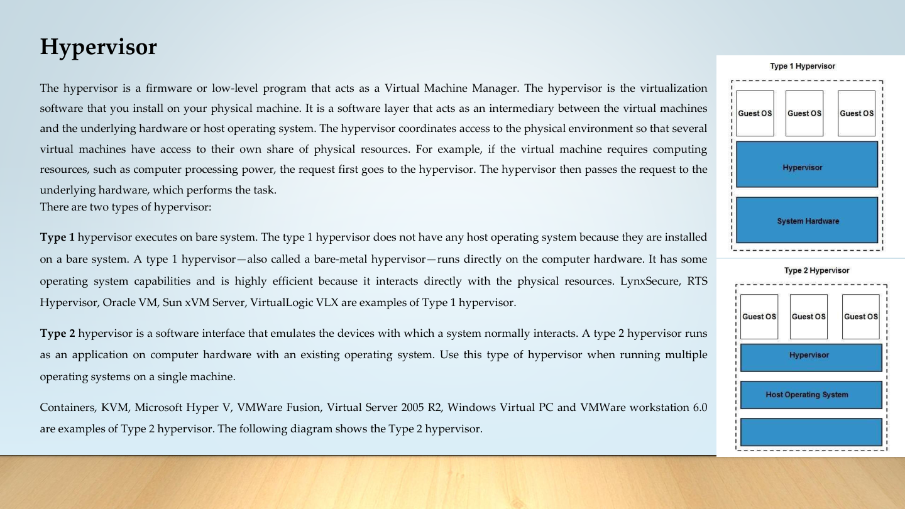
03 · What runs on top of the hypervisor
Virtual Machines / Cloud Instances
VM technology allows multiple VMs to run on a single physical machine. After installing virtualization software, you create one or more VMs and access them like any other application. The physical computer is the host; each VM is a guest — several guests can run on one host, each with its own OS (same or different from the host's).
From the user's perspective, a VM operates like a typical server — its own settings, configurations, installed apps, and it "sees" CPU/RAM/storage the same way a physical server would. Guest OSes/apps can be configured and updated without affecting the host.
Performance note: Para-virtualization (e.g. Xen) runs very close to raw physical performance.
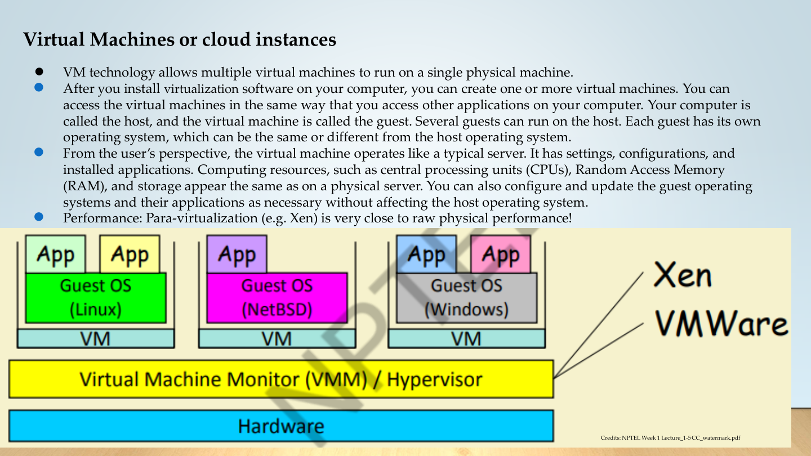
Advantages of virtual machines
- Run OSes where the physical hardware is unavailable
- Easier to create new machines, backup machines, etc.
- Software testing using "clean" installs of OS/software
- Emulate more machines than are physically available
- Timeshare lightly-loaded systems on one host
- Debug problems (suspend and resume the problem machine)
- Easy migration of VMs (with or without shutdown)
- Run legacy systems
04 · The 8 types
Types of Virtualization
1. Hardware
2. Operating System
3. Server
4. Storage
5. Desktop
6. Network
7. Data
8. Application
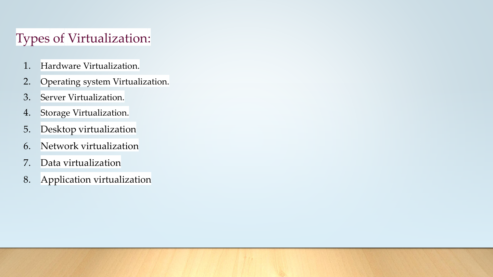
05 · Deep dive: the most-tested type
Hardware Virtualization
When the VM software/VMM is installed directly on the hardware system, it's hardware virtualization. The hypervisor's main job is to control and monitor the processor, memory, and other hardware resources. Mainly done on server platforms, since controlling VMs is much easier than controlling a physical server.
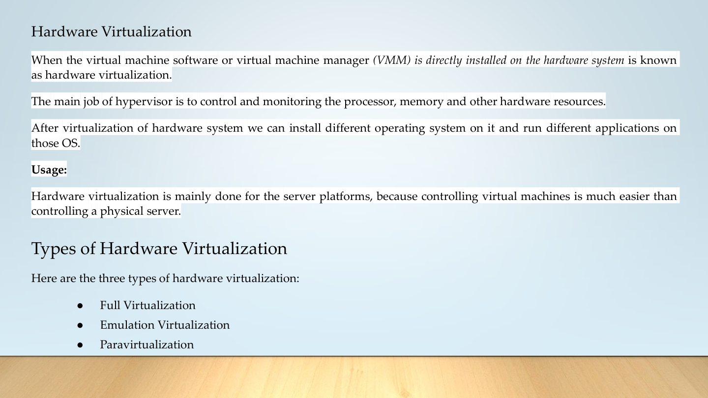
Three types of hardware virtualization
1️⃣ Full Virtualization
The underlying hardware is completely simulated. Guest software needs no
modification to run. Introduced by IBM in 1966 — the first software solution for server
virtualization, using binary translation + direct execution. The VM completely isolates the guest
OS from the virtualization layer and hardware.
Examples: VMware vSphere/ESXi, Microsoft Hyper-V, Oracle VirtualBox, Parallels.
- Hypervisor layer: a VMM sits between hardware and guest OSes, managing resource allocation
- Hardware-assisted: uses Intel VT-x / AMD-V to run guest OSes directly on the CPU with minimal overhead
- Isolation: VMs are completely isolated from each other
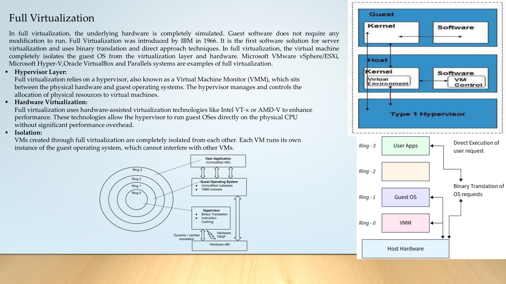
2️⃣ Emulation Virtualization
The VM simulates the hardware and hence becomes independent of it. The guest OS does not require modification.
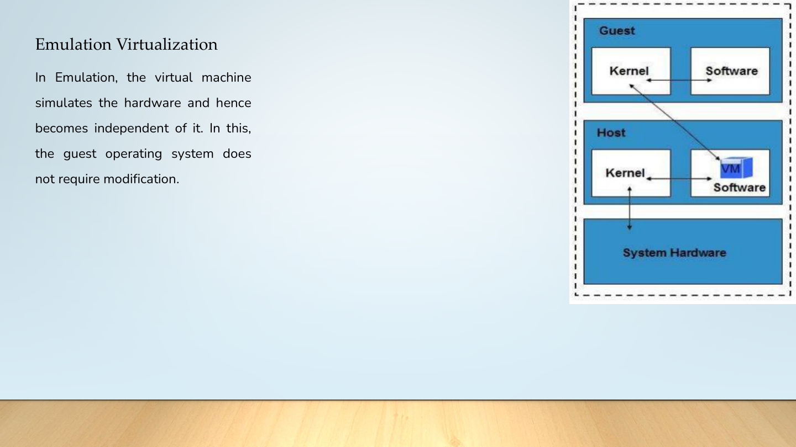
3️⃣ Paravirtualization
The hardware is not simulated — guest software runs in its own isolated
domain. Uses hypercalls to handle instructions at compile time. The guest OS is
only partially isolated from the virtualization layer/hardware.
Examples: VMware, Xen.
- Hypervisor layer: guest OSes are aware of the hypervisor and use its APIs to talk to hardware
- Guest OS modifications: hardware-related instructions are replaced with hypercalls to the hypervisor
- Performance benefit: avoids the overhead of emulating complete hardware — often faster than full virtualization
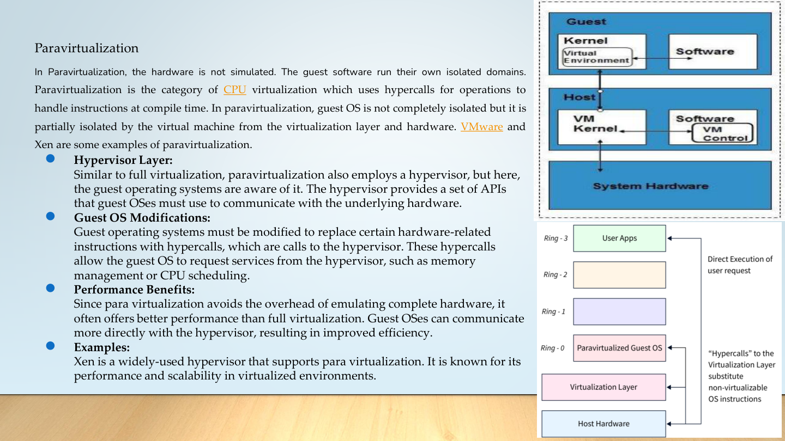
06 · The remaining 6 types
OS, Server, Storage, Network, Data & Application Virtualization
Operating System Virtualization
VM software/VMM installed on the host OS instead of directly on hardware. The OS kernel's resources get shared, allowing isolated instances (containers) with dedicated resources to run different applications.
- Quicker than server virtualization
- Autonomous — each container has its own software/libraries within the shared kernel
- Very easy to migrate a container
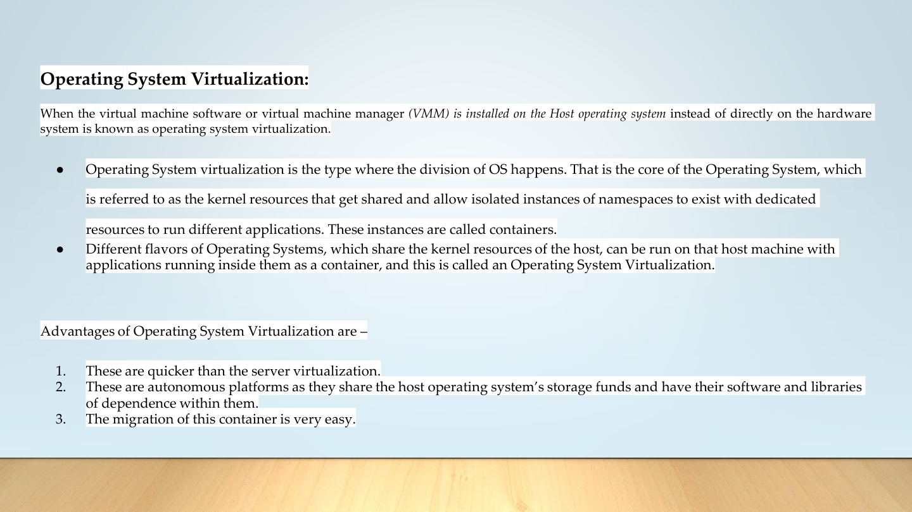
Server Virtualization
Divides a physical server into multiple virtual servers for efficient resource use. Without it, physical servers use only a small fraction of their processing capacity. Masks server resources (processor, OS, memory) and presents each user a private virtual server.
Used for: web hosting cost reduction, dev/test environments, private cloud simulation, clustered-architecture app hosting.
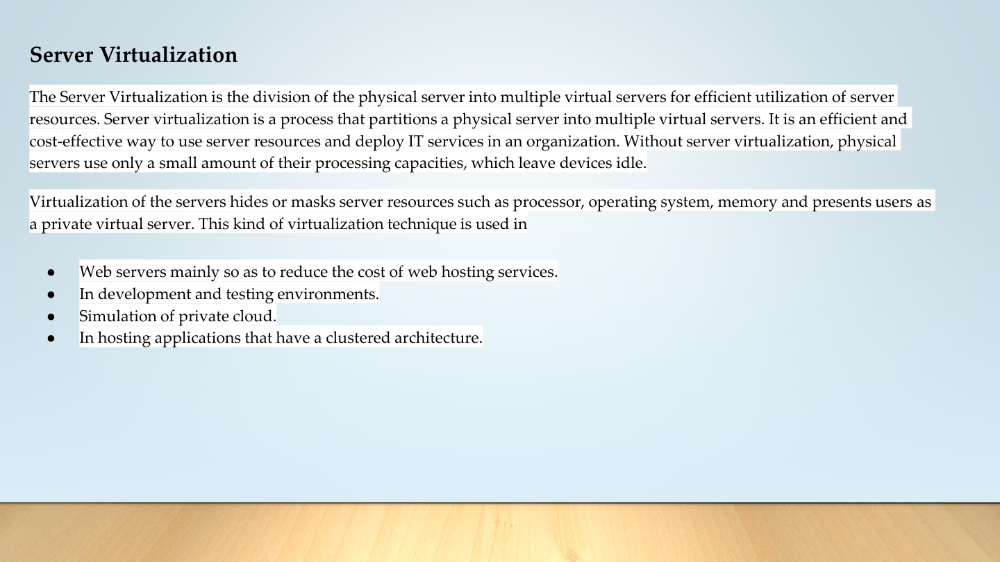
Storage Virtualization
Pools all storage devices as a single storage device, masking the complexity of the SAN. Combines NAS and SAN functions — pools hardware even across different vendors/types into one large virtual storage unit, controlled via management software.
- Easy to create shared storage
- Easy to pool storage resources, masking the SAN
- Host failure doesn't necessarily compromise data
- Easy to partition and protect storage
- Enables duplication, replication, and disaster recovery
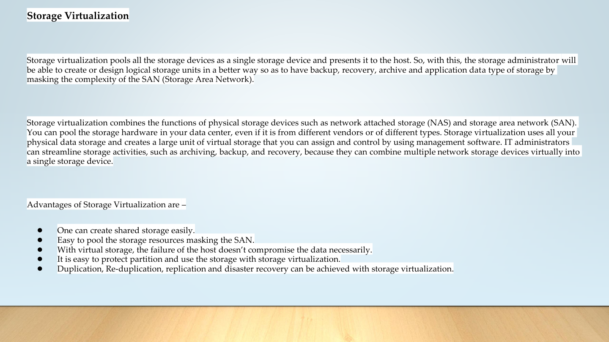
Network Virtualization
Combines network hardware elements (switches, routers, firewalls) to centralize administrative tasks — adjust/control elements virtually without touching physical components.
Software-Defined Networking (SDN)
Controls traffic routing by taking over routing management from the physical environment — e.g. prioritizing video-call traffic over other traffic.
Network Function Virtualization
Combines functions of network appliances (firewalls, load balancers, traffic analyzers) working together to improve performance.
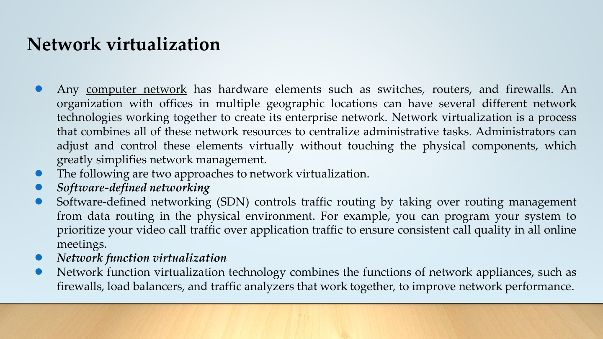
Data Virtualization
Organizations collect data from multiple sources/formats/locations (cloud + on-prem). Data virtualization creates a software layer between this data and the applications that need it — processes requests and returns results in a suitable format, increasing flexibility for data integration and cross-functional analysis.
Application Virtualization
Pulls application functions out to run on OSes other than the one they were designed for — e.g. running a Windows app on Linux without changing machine configuration.
- Application streaming: streamed from a remote server, runs on the end-user device only when needed
- Server-based application virtualization: accessed remotely via browser/client, no install needed
- Local application virtualization: app code ships with its own environment, runs unmodified across OSes
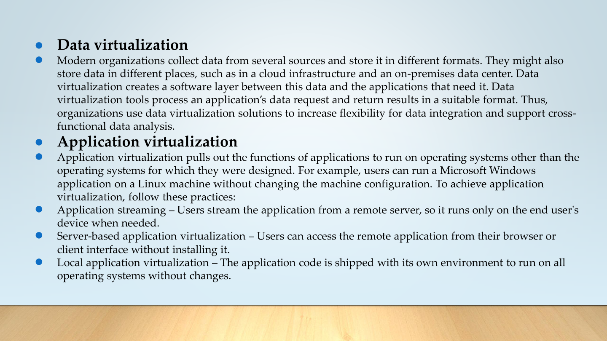
07 · The canonical Type-1, para-virtualization example
Xen Hypervisor & Architecture
Xen is an open-source hypervisor developed by Cambridge University — a microkernel hypervisor that separates policy from mechanism. Core components: the hypervisor, kernel, and applications. Xen runs directly on system hardware, inserting a virtualization layer between the hardware and VMs, turning hardware into a pool of logical computing resources dynamically allocated to any guest OS.
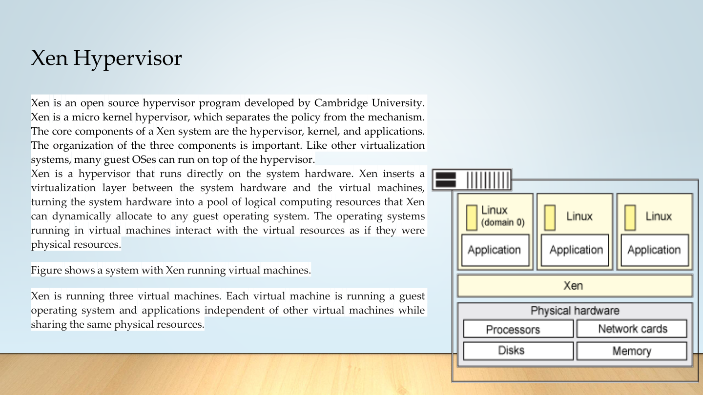
Not all guest OSes are equal — Dom0 vs DomU
👑 Dom0 (Domain 0 / privileged domain / xen-server / host)
The first domain started by the Xen hypervisor on boot. Has special privileges — can start new domains and access hardware directly. Runs all the device drivers. For hardware shared with other domains (network, disks), runs the Backend Driver, which multiplexes/forwards requests from each DomU's Frontend Driver. Any OS can theoretically be ported to run as a DomU, but only Linux has the tools/patches to run in Dom0.
🔒 DomU (Domain U / unprivileged domain / guest VM)
The counterpart to Dom0 — by default, no access to hardware. Must run a Frontend Driver for
multiplexed hardware it wants to share. Started by xend in Dom0, accessed with the
xm command-line tool.
The hypervisor itself (Xen) sits between the hardware and the OS of each domain — responsible for checking page tables, allocating resources for new domains, scheduling domains, and booting the machine to start Dom0. It presents each domain a virtual machine similar-but-not- identical to the native architecture. Together, Dom0 + DomU + hypervisor make up the Virtual Machine Environment — able to run multiple OSes simultaneously.
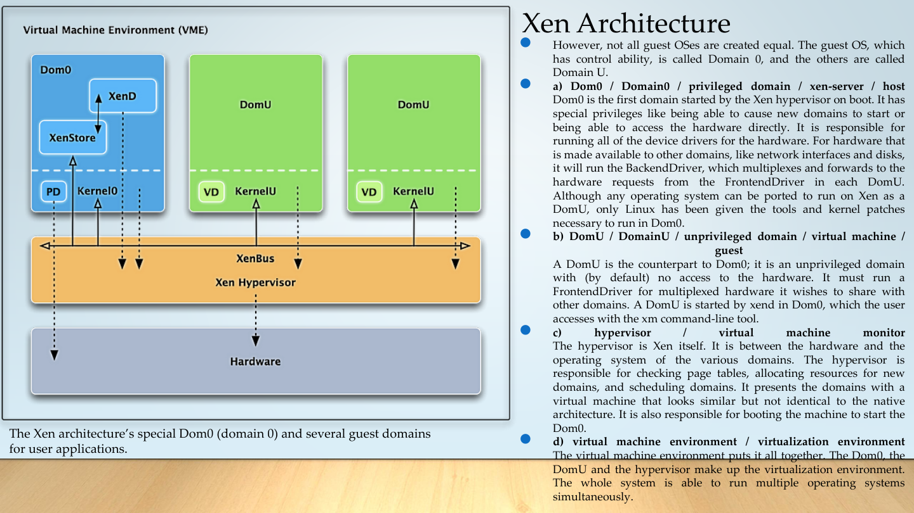
08 · Linux's native hypervisor
KVM (Kernel-based Virtual Machine)
KVM is a full native virtualization solution for Linux on x86 hardware with virtualization extensions (Intel VT / AMD-V). Also has limited paravirtualization support (a paravirtual network driver) for Linux/Windows guests.
- Interfaces with the kernel via a loadable kernel module
- Supports many guest OSes: Linux, BSD, Solaris, Windows, Haiku, ReactOS, AROS
- Each VM is implemented as a regular Linux process, scheduled by the standard Linux scheduler — each vCPU appears as a regular Linux process, letting KVM benefit from all Linux kernel features
As a Linux para-virtualization system (part of the 2.6.20 kernel), memory management/scheduling is handled by the existing Linux kernel — KVM does the rest, making it simpler than a hypervisor that controls the entire machine. It's hardware-assisted para-virtualization, supporting unmodified guest OSes (Windows, Linux, Solaris, other UNIX variants).
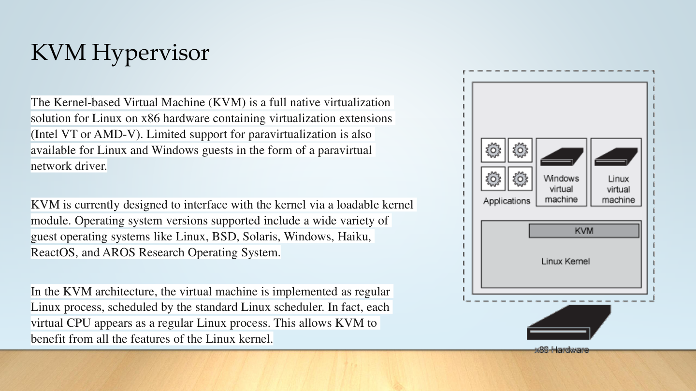
09 · How full virtualization actually works under the hood
Binary Translation with Full Virtualization
Hardware virtualization implementation splits into two categories: full virtualization and host-based virtualization. Full virtualization needs no host-OS modification — it relies on binary translation to trap and virtualize sensitive, non-virtualizable instructions.
1. Full Virtualization
Noncritical instructions run directly on hardware; critical instructions are trapped and emulated by the VMM (this is why only critical instructions are trapped — binary translation has real performance overhead, so running noncritical instructions natively promotes both efficiency and security).
2. Binary Translation of Guest OS Requests using a VMM
Implemented by VMware and others. The VMM sits at Ring 0 and the guest OS at Ring 1. The VMM scans the instruction stream, identifies privileged/control/ behavior-sensitive instructions, traps them into the VMM, and emulates their behavior — this emulation method is binary translation. Full virtualization = binary translation + direct execution. The guest OS is completely decoupled from the hardware and unaware it's being virtualized.
Performance isn't ideal since binary translation is time-consuming — I/O- intensive workloads suffer most. A code cache stores translated hot instructions to help, at the cost of memory usage. Typical performance: 80-97% of the host machine's native performance on x86.
✅ Advantages
- Best isolation and security for the VM
- Multiple guest OSes execute concurrently, truly isolated
- Only approach needing no hardware/OS assist to virtualize sensitive/privileged instructions
⚠️ Disadvantages
- Time-consuming at runtime
- Large performance overhead
- Code cache increases memory usage and hardware cost
- ~80-95% of host machine performance on x86
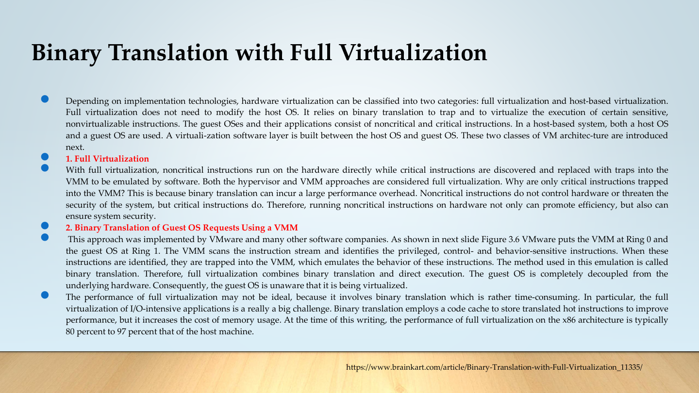
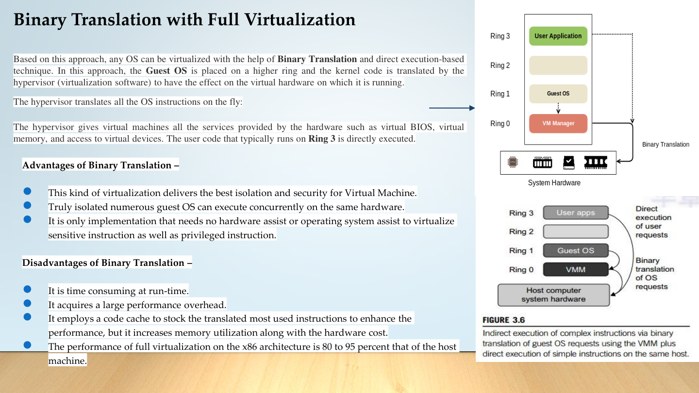
Host-Based Virtualization
An alternative VM architecture — install a virtualization layer on top of the host OS, which still manages the hardware. Guest OSes run on top of this virtualization layer.
- User can install without modifying the host OS — the host OS supplies device drivers and other low-level services, simplifying VM design/deployment
- Appeals to many host configurations, but performance can be lower than the hypervisor/VMM architecture — hardware access involves 4 layers of mapping, which significantly downgrades performance
- When the guest OS's ISA differs from the underlying hardware's ISA, binary translation must still be used — flexible, but performance is often too low to be practical
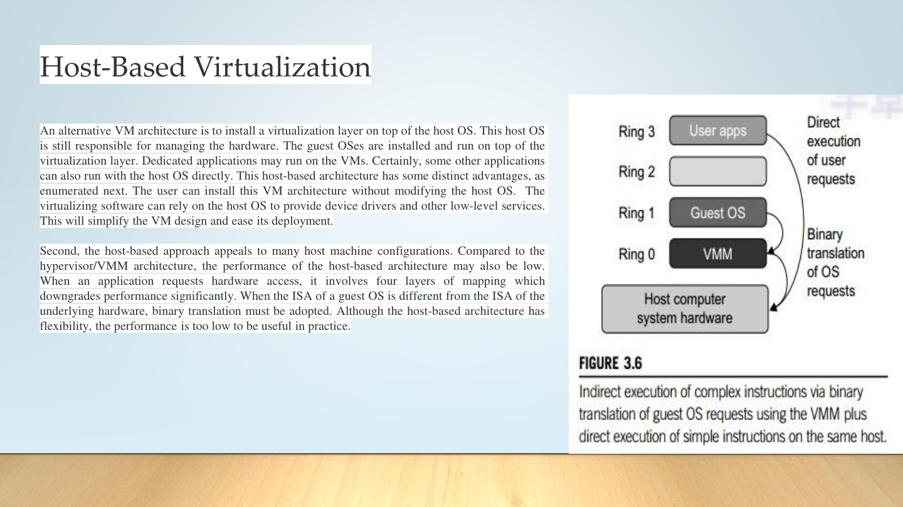
10 · The performance-focused alternative
Para-Virtualization with Compiler Support
Unlike full virtualization (which intercepts/emulates privileged instructions at runtime), para-virtualization handles these instructions at compile time. The guest OS kernel is modified to replace privileged/sensitive instructions with hypercalls to the hypervisor/VMM. Xen uses this architecture — the guest OS runs at Ring 1 instead of Ring 0, so it can't execute some privileged instructions directly; those are implemented via hypercalls instead.
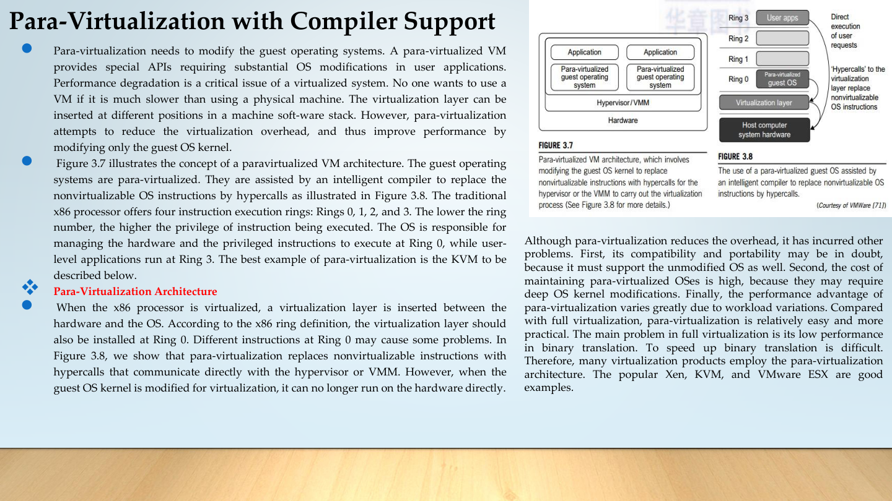
On the x86 ring model (Rings 0-3, lower number = higher privilege): the OS normally manages hardware + privileged instructions at Ring 0, user apps run at Ring 3. In para-virtualization, the virtualization layer is inserted between hardware and OS, also at Ring 0 — but since the guest OS kernel is modified for virtualization, it can no longer run directly on hardware unmodified.
✅ Advantages over full virtualization
Relatively easy and more practical — full virtualization's main problem is its low performance from binary translation, which is difficult to speed up. Many virtualization products (Xen, KVM, VMware ESX) therefore use para-virtualization.
⚠️ Disadvantages
- Compatibility/portability may be in doubt, since it must still support unmodified OSes for some use cases
- High maintenance cost — requires deep OS kernel modifications
- Performance advantage varies greatly with workload
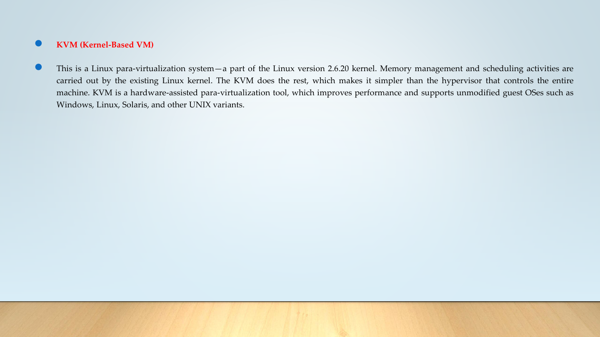
VMware ESX Server
The service console boots the system, initiates the VMM and resource manager, and relinquishes control to those layers — also facilitates system administration. VMware pioneered the virtualization software market, building tools for desktops, servers, and large data-center virtual infrastructure. ESX is a VMM/hypervisor for bare-metal x86 SMP servers — accesses I/O directly, complete resource management control. Components: a virtualization layer, resource manager, hardware interface components, and a service console. To improve performance, ESX employs a para-virtualization architecture where the VM kernel interacts directly with hardware, bypassing the host OS.
The VMM layer virtualizes physical hardware resources (CPU, memory, network, disk controllers, human interface devices) — every VM gets its own virtual hardware resource set. The resource manager allocates CPU/memory/disk/network bandwidth, mapping them to each VM's virtual hardware set. Hardware interface components are the device drivers and hardware-specific software.
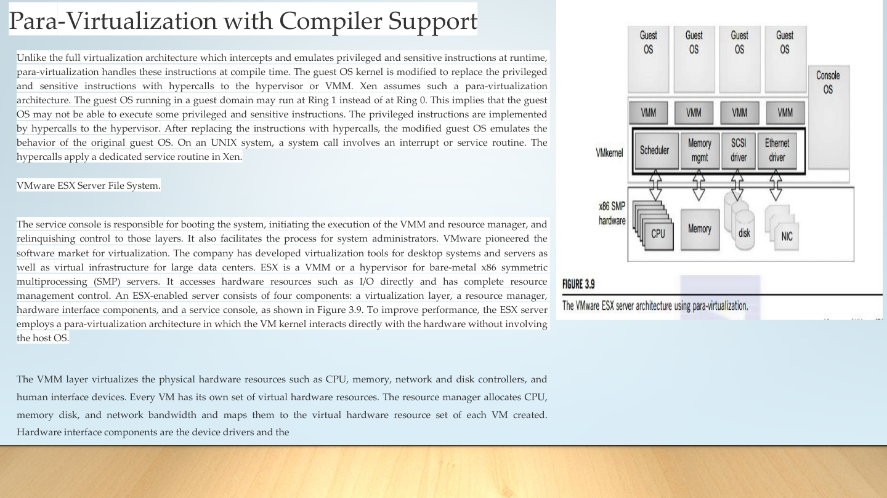
11 · Where virtualization is applied in the stack
Implementation Levels of Virtualization
It's not simple to set up virtualization — your computer runs an OS configured for particular hardware, and running a different OS on the same hardware isn't trivially feasible. This is exactly the role of the hypervisor: a bridge between hardware and the virtual OS. There are 5 commonly-used implementation levels.
12 · Designing real cloud systems
Insights into Cloud Computing Architecture
Cloud Architecture covers the various components — databases, software capabilities, applications — that companies of all sizes use to leverage cloud resources for business problems. (Even at home: Microsoft 365, Google Docs, Spotify all run on cloud infrastructure.) The goal: high bandwidth, uninterrupted access to data/apps, on-demand agile networking between servers/clouds, and network security.
6 Principles of Cloud Computing Architecture Design
A complete design process: collect requirements → analyze → design architecture → evaluate improvements → deliver implementation → achieve continuous operations.
1️⃣ Reasonable Deployment
Public cloud deployment = VMs + higher- performance physical cloud hosts. Private deployments are packaged as independent software for a user's private environment, available only to select users (unlike "any user" public cloud). Hybrid enables unified management across public cloud + private platforms (VMware, OpenStack, physical servers).
2️⃣ Business Continuity
High Availability — redundancy avoids business interruption on resource failure. Continuous Operations — fault-free resources, uninterrupted service. Disaster Recovery — restoring apps/data in a different environment when the primary is damaged.
3️⃣ Elastic Expansion
Tightly-coupled systems are hard to expand/ troubleshoot. Decouple components first (dynamic vs static data): stay stateless (store state in Redis), use load balancing, decouple via message queues/API Gateway, achieve global load balancing across a hybrid/multi-cloud setup.
4️⃣ Performance Efficiency
Compute: higher-config hosts + cluster expansion. Storage/caching: cache hot data via Redis, in- memory calculations. Network: pick the optimal data center for global deployments.
5️⃣ Security Compliance
Master/sub-accounts with separated public/ private keys and minimum required permissions; ACLs and security groups to restrict access; VPC isolation for internal-only resources; prevent DDoS/SQL injection/XSS; maintain access + operation logs.
6️⃣ Continuous Operation
Monitor resources/services/events/user apps continuously, set alarms → notify via phone/SMS/email → hand off to callback functions for automated fault handling → auto-scale based on CPU/other metrics → monitor costs, set balance alarms to avoid runaway spend.
Cloud architecture components (recap from Unit 1)
13 · Processing at extreme scale
High-Performance Computing (HPC)
HPC is the ability to process data and perform complex calculations at high speed. A laptop/desktop with a 3 GHz processor manages ~3 billion calculations/second — HPC solutions perform quadrillions of calculations per second.
A supercomputer — one of the best-known HPC types — contains thousands of compute nodes working together (parallel processing), like thousands of networked PCs combining compute power.
3 main components
⚙️ Compute
Servers networked into a cluster, running software/algorithms simultaneously.
🌐 Network
Must support high-speed transport of data between compute servers and storage.
💾 Storage
Must feed/ingest data to/from compute servers as fast as it's processed.
If any one component can't keep up, the whole HPC infrastructure's performance suffers. An HPC cluster = hundreds/thousands of networked compute servers ("nodes") working in parallel.
HPC use cases
- Research labs: renewable energy, understanding universe evolution, storm prediction, new materials
- Media & entertainment: editing feature films, special effects, live-event streaming
- Oil & gas: identifying drill sites, boosting production
- AI/ML: credit card fraud detection, self-driving vehicles, cancer screening
- Financial services: real-time stock trend tracking, automated trading
- Product design/simulation, supply chain management, disease research (diabetes, cancer)
14 · Sharing resources across organizations
Utility & Enterprise Grid Computing
Utility Computing
The most trending IT service model — on-demand computing resources (compute, storage, programming services via API) and infrastructure, billed pay-per-use. Minimizes cost, maximizes resource efficiency. Google and Amazon built their own utility services this way.
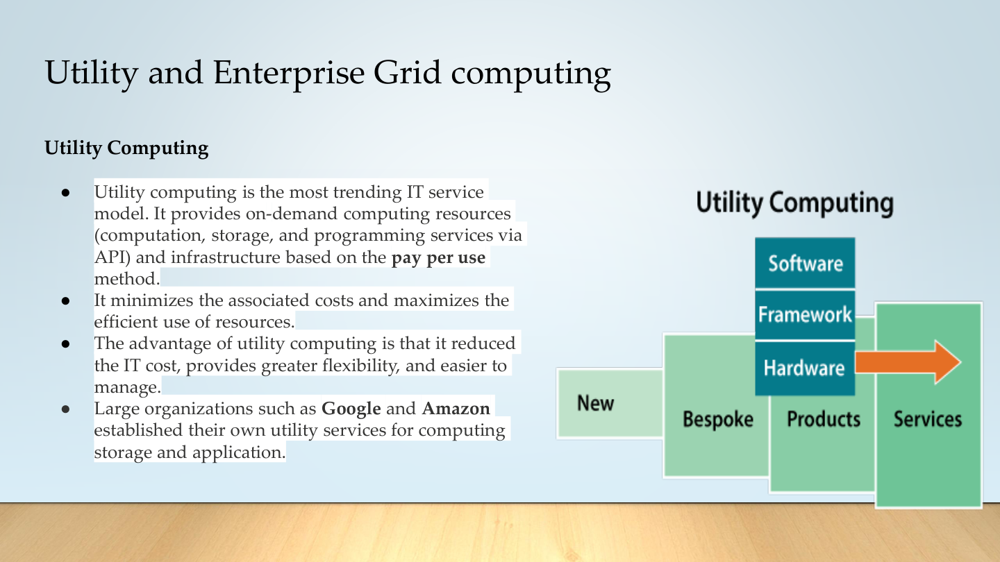
Examples: file/application/web server access, IaaS/SaaS/PaaS, virtually unlimited processing/storage, customer computing app support, cloud storage, utility services (power, HVAC, communications), general/specialized IT expertise (e.g. ransomware response).
Grid Computing
Also known as distributed computing — a processor architecture combining different computing resources from multiple locations toward a common goal, connected via parallel nodes forming a computer cluster (varying sizes, any OS).
🎛️ Control Node
A group of servers administering the whole network.
📦 Provider
A computer contributing its resources to the network resource pool.
👤 User
A computer that uses resources on the network.
Used mainly in ATMs, back-end infrastructures, and marketing research. Specialized software runs on every participating computer, coordinating tasks: assigns subtasks → computers work simultaneously → outputs gathered/aggregated into the larger task result, with computers communicating over the network to share progress and consolidate outputs.
Benefits of Cloud Environments (unit recap)
Hands-on: AWS EC2 as a virtual server in the cloud
A practical comparison — deploying a Linux web server the traditional virtualization way (physical server → hypervisor → VM) vs the AWS way (just launch an EC2 instance):
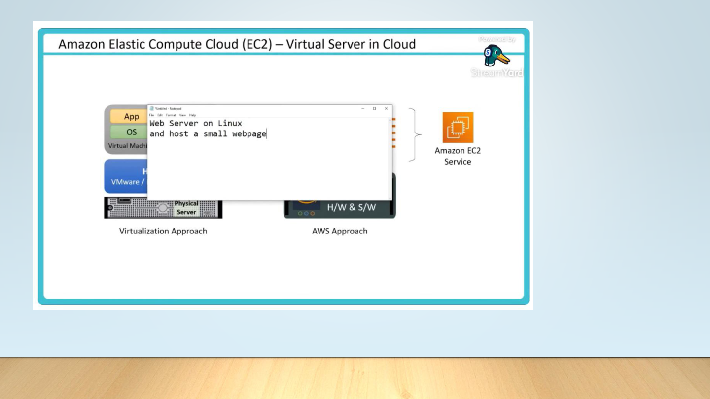